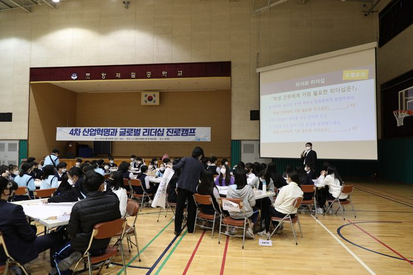

등록일 2021-04-30

포스텍 박태준미래전략연구소 정기준 교수팀은 포항 제철중학교에서 2021년 4월 29일(목) 학생회 임원 및 학급 반장들을 대상으로 리더십 교육을 진행하였습니다. 학생회 임원단 및 반장 72명을 대상으로 학생 임원으로 가져야 하는 올바른 자세, 친구를 사랑하고 이해하는 우호적 인간관계 형성, 긍정적 자아 정체성 형성을 통한 자신감 증진, 명확하고 영향력 있는 커뮤니케이셔 스킬 함양, 학교 및 가정에서 선한 영향력을 발휘하는 리더십 함양에 대한 교육을 진행하였습니다.
소통과 공감의 열정 청소년 리더십 프로그램
청소년들의 잠재력과 글로벌 리더로서의 역량, 리더십 등의 인성 교육은 올바른 성인으로 성장하기 위해 가장 중요한 요소입니다. 포항제철중학교 학생 임원들을 위한 포스텍 글로벌리더십 교육은 올바른 인성 교육뿐만 아니라 4차 산업혁명 시대를 살아갈 청소년들이 보람되고 성공적인 삶을 살아가기 위해 갖추어야 할 자질과 역량을 알게 합니다. 무엇보다 학교에서 학생들을 대표하는 리더로서 올바른 리더십을 발휘하기 위해 반드시 갖추어야 하는 본인의 올바른 자세, 타인과의 성공적인 소통, 학급을 바르게 이끄는 방법을 배워 우수한 학생 임원으로 역할을 다할 수 있도록 도울 것입니다.
□ 프로그램 안내
| 주차 | 교육목표 | 교육내용 |
|---|---|---|
| [1교시](강의)9:00∼9:45 | 리더와 리더십의 개념과 미래의 인재상 | ㆍ4차산업혁명과 미래의 인재상 |
| [2교시] (강의 및 토론)9:55∼10:40 | 리더십의 개념과 리더가 갖추어야 하는 주요 역량 | ㆍ리더와 리더십에 대한 개념 정립 |
| [3교시](강의 및 토론)10:50∼11:35 | 성공적 소통 체험다면적 인간관계 역량 강화 | ㆍ학생 간부들이 갖추어야 하는 올바른 리더십 (소통 및 대인관계) |
| [4교시] (액티비티)11:45∼12:30 | 팀워크 활동 | ㆍ책임감▪배려▪소통▪팀워크를 위한 액티비티 |
| [마무리] | 학생간부로서 나의 각오 | ㆍ교육을 통해 느낀 점과 실천할 점에 대한 정리 |